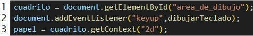

AGREGAR SCRIPT A HTML
script src="eventos.js">/script .. / . Ponemos la etiqueta script con el nombre del archivo js dentro de head o
body segun cuando queramos que se ejecute
JavaScript es sensible a Mayusculas y caracteres, las variables siempre comienzan en minuscula y luego en
mayusculas
Variables Pueden contener "texto", numeros, etiquetas(acciones) etc
var : Pueden ser modificadas y redeclaradas
✓ ✓
let : Pueden ser modificadas pero no redeclaradas ✓❌
const : NO pueden ser modificadas ni redeclaradas ❌ ❌
Se abren con corchete y al final se pone; si colocamos varios valores las separamos con ,
Adquirir los elementos de html Como en css, debemos colocal un id o class en html a lo que deseamos
manipular
elemento/variable = document.getElementById(id/nombreEnHtml); Devuelve una referencia al elemento por
su id
En js creamos una variable, con document.getElementById (documento obtener elemento por
Identificación) traemos el id asignado en html
document.addEventlistener (agregar detector de eventos)= Es un escuchador que indica al navegador que
este atento a la interacción del
usuario
document.addEventListener('tipo de evento',función); se le indica como quiere ser escuchado y que funcion
realizar al escucharse
document es el documento con el id que guarde en una variable
Tipo de eventos
blur Cuando el elemento pierde el foco.
click El usuario hace clic sobre el elemento.
dblclick El usuario hace doble clic sobre el elemento.
focus El elemento gana el foco.
keydown El usuario presiona una tecla.
keypress El usuario presiona una tecla y la mantiene pulsada.
keyup El usuario libera la tecla.
load El documento termina su carga.
mousedown El usuario presiona el botón del ratón en un elemento.
mousemove El usuario mueve el puntero del ratón sobre un elemento.
mouseout El usuario mueve el puntero fuera de un elemento.
mouseover El usuario mantiene el puntero sobre un elemento.
mouseup El usuario libera el botón pulsado del ratón sobre un elemento.
unload El documento se descarga, bien porque se cierra la ventana, bien porque se navega a
otra página.
canvas.getContext(contextType, contextAttributes); ./ retorna un contexto de dibujo en el lienzo
Creamos una variable en la que gardamos la variable en la que traimos el id, le asignamos en getContext/
contexto ( "2d")

EJEMPLOS
var teclas = { ../ Las teclas del teclado tienen un numero, las ponemos llamar con su nombre y su respectivo
numero
UP: 38,
DOWN: 40,
LEFT: 37,
RIGHT: 39
};
ARRAYS y ejemplos
Creamos una variable, donde le asignamos new Array() vacio
O en vez de new array colocamos = [ ];
Para agregar contenido llamamos la variable usamos .push("nuevoContenido") push(empujar)
ejm 1 const ciudadesDisponibles = new Array();AGREGAMOS CON UN CORCHETE
ejm 2 const ciudadesMasVendidas =[ ];
ciudadesDisponibles.push("Bogota");
ciudadesDisponibles.push("Quito");
ciudadesDisponibles.push("Lima");
console.log(ciudadesDisponibles);
Conocer la Cantidad de la lista
console.log(ciudadesDisponibles[2]); Aparecera Lima, la posicion inicial es 0
Conocer la Posicion en la lista
const cantidadCiudades = ciudadesDisponibles.length; /. .length(longitud)
console.log(`Tenemos ${cantidadCiudades} ciudades disponibles`); Aparecera Tenemos 3 ciudades disponibles
CONDICIONALES
if para especificar un bloque de código que se ejecutará, si una condición especificada es verdadera
else para especificar un bloque de código que se ejecutará, si la misma condición es falsa (es como un SI NO has esto)
else if para especificar una nueva condición para probar, si la primera condición es falsa
switch
para especificar muchos bloques alternativos de código que se ejecutarán.
if
para especificar un bloque de código JavaScript que se ejecutará si una condición es verdadera.
Sintaxis
if (condition) {
// bloque de código que se ejecutará si la condición es verdadera
}
else
para especificar un bloque de código que se ejecutará si la condición es falsa.
if (condition) {
// bloque de código que se ejecutará si la condición es verdadera}
else {
// bloque de código que se ejecutará si la condición es falsa
}
else if
para especificar una nueva condición si la primera condición es falsa.
if (condition1) {
bloque de código que se ejecutará si la condición 1 es verdadera }
else if (condition2) {
bloque de código que se ejecutará si la condición1 es falsa y la condición2 es verdadera }
else {
bloque de código que se ejecutará si la condición1 es falsa y la condición2 es falsa }
OPERADORES
O=||
ejemplo if (edadComprador >= 18 || estaAcompañado)
Y=&&
if (tienePasaje && (edadComprador >= 18) || estaAcompañado){
console.log("Comprador con pasaje. Feliz viaje");
}
else {
console.log("Comprador sin pasaje. No es posible hacer el embarque"):
}
ciclo for se repite hasta que una condición especificada se evalúe como false
for ([expresiónInicial]; [expresiónCondicional]; [expresiónDeActualización])
instrucción
for (let i = 0; i < 3; i++) { // muestra 0, luego 1, luego 2
alert(i);
}
do while hacer mientras
El bucle primero ejecuta el cuerpo, luego comprueba la condición, y, mientras sea un valor verdadero, la ejecuta una y otra vez.
do {
// cuerpo del bucle
} while (condition);
En el siguiente ejemplo, el bucle do itera al menos una vez y se repite hasta que i ya no sea menor que 5.
let i = 0; do { i += 1; console.log(i); } while (i < 5); otro ejemplo
let i = 0;
do {
alert( i );
i++;
} while (i < 3);
while mientras
Una declaración while ejecuta sus instrucciones siempre que una condición especificada se evalúe como true. Una instrucción while tiene el siguiente aspecto:
while (condición)
expresión
Si la condición se vuelve false, la instrucción dentro del bucle se deja de ejecutar y el control pasa a la instrucción que sigue al bucle.
ejemplo 1
let n = 0;
let x = 0;
while (n < 3) {
n++;
x += n;}
ejemplo 2
let i = 0;
while (i < 3) { // muestra 0, luego 1, luego 2
alert( i );
i++;
}
Las llaves no son requeridas para un cuerpo de una sola línea
Si el cuerpo del bucle tiene una sola sentencia, podemos omitir las llaves {…}
let i = 3;
while (i) alert(i--);